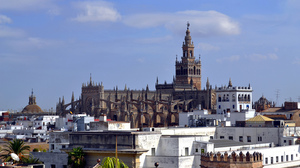

<table class="wikitable" width="100%">

<tr><th colspan=6><a href="sevilla.html">Etapa 8: Sevilla</a></th></tr>

<tr><td><b>Provincia</b>: Sevilla</td><td width="20%"><b>Superficie</b>:  km<sup>2</sup></td><td width="25%"><b>Población</b>:  ( hab./km<sup>2</sup>)</td><td rowspan="8" width="1%"><a href="../../images/sevilla1.jpg"></a></td></tr>

<tr><td colspan="3"><b>Municipio(s) visitado(s)</b>: Santiponce</td></tr>

<tr><td><b>Distancia recorrida</b>: </td><td><b>Fecha</b>: 2007, 2009, 2011, 2013</td><td><b>Duración</b>: Varios días</td></tr>

<tr><td colspan=3><b>Arquitectura civil</b>: </td></tr>

<tr><td colspan=3><b>Arquitectura religiosa</b>: </td></tr>

<tr><td colspan=3><b>Museos</b>: </td></tr>

<tr><td colspan=3><b>Naturaleza</b>: </td></tr>

<tr><td colspan=3><b>Otros</b>: </td></tr>

</table>
